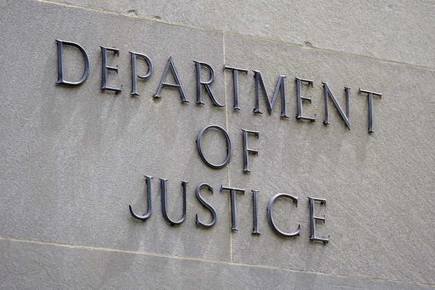

DOJ Withdraws Appeals After Courts Rule Trump's Law Firm Orders Unconstitutional


Key Facts
- The DOJ voluntarily dismissed appeals in the U.S. Court of Appeals in Washington, D.C.
- Four firms were targeted: Perkins Coie, WilmerHale, Susman Godfrey, and Jenner & Block.
- Federal judges ruled the orders violated the First, Fifth, and Sixth Amendments.
- Nine other firms avoided orders by negotiating settlements worth hundreds of millions in pro bono work.
- The DOJ faces more than 600 lawsuits challenging Trump administration policies.
The Justice Department announced on Monday that it would withdraw its legal defense of President Donald Trump's executive orders targeting numerous high-profile law firms, citing unanimous findings from federal judges that the actions were unlawful.
Court filings in the United States Court of Appeals in Washington, D.C., revealed that the administration will voluntarily withdraw its appeals of lower court decisions that blocked the orders against Perkins Coie, Wilmer Cutler Pickering Hale and Dorr LLP, Susman Godfrey, and Jenner & Block.
The orders aimed to punish the firms by limiting their access to federal buildings and officials, their clients, government contracts, and employee security clearances. The litigation prevented any of the directives from going into force. Federal judges determined that the provisions violated the First, Fifth, and Sixth Amendments. In one verdict, a judge said the injunction against Perkins Coie carried the message that "lawyers must stick to the party line, or else," while another judge claimed the government attempted to use its enormous power to prescribe the positions law firms may take. The Justice Department declined to comment on the judgment.
Why This News Matters
This is an important moment for the balance of power between the courts and the White House. Federal judges said that the executive orders aimed at major law firms were against the law. Now, the Justice Department is backing off instead of continuing the fight. For many lawyers, this strengthens a basic principle: attorneys and their clients cannot be punished for the cases they take or the arguments they make. The results also show that the Constitution limits the power of the executive branch.

Firms Claim Vindication After Court Victories
The four law firms sued the administration and won decisively in federal court. WilmerHale stated that the government's decision to dismiss its appeal was clearly correct, and that its challenge was about safeguarding clients' constitutional freedom to choose their own counsel and the rule of law.
Susman Godfrey stated that the administration capitulated, describing the fight as protecting a Constitution that safeguards freedoms and a legal profession built on equal justice under the law. Jenner & Block said the withdrawal confirmed four federal judges' decisions that the executive orders were unlawful and reinforced its commitment to advocating for clients without compromise.
The firms were targeted for specific employment and legal work. Perkins Coie had represented Hillary Clinton and hired a research firm linked to the Steele dossier. WilmerHale and Jenner & Block employed lawyers involved in the Russia investigation, including Robert Mueller and Andrew Weissmann. Susman Godfrey had defended Dominion Voting Systems in its defamation lawsuit against Fox News.
Divide Within the Legal Community Over White House Pressure
While the four firms challenged the presidential orders in court, other major firms negotiated agreements with the White House to avoid similar demands. Paul Weiss made a deal after promising tens of millions of dollars in pro bono work to promote White House programs. Skadden Arps also negotiated an arrangement, sparking outrage in the legal profession and a letter from graduates denouncing the decision.
The administration successfully extracted hundreds of millions of dollars in free legal services from nine firms that agreed to settle. Vanita Gupta, the third-highest-ranking official at the Justice Department under the Biden administration, said firms that capitulated damaged the rule of law and the legal profession.
She said that people would remember the episode as showing the difference between institutions that followed the Constitution and those that did not. Representative Jamie Raskin praised the companies that said no, saying they forced Trump to abandon what he called an obviously illegal effort to punish lawyers, clients, and organizations.
Broader Campaign and Ongoing Legal Challenges
The executive orders targeting law firms were part of Trump's larger attempt to punish perceived political opponents during his second term. He also canceled security clearances and protective details for critics and sought indictments against former officials such as James Comey and Letitia James, although those cases were subsequently dismissed after a judge determined that the prosecutor was improperly appointed.
The law firm cases stemmed from executive directives issued in March and April that aimed to punish businesses for particular recruitment and litigation positions, including work that challenged portions of Trump's agenda. The Justice Department's decision to dismiss the appeals comes as it confronts more than 600 lawsuits contesting various aspects of the president's policies.
Other cases, such as one launched by the American Bar Association over canceled awards, have seen government lawyers withdraw. The administration had been delaying procedures in the D.C. Circuit before finally informing the firms that its appeals were over.
What to Watch Next
- Future pressure tactics: Will the administration pursue alternative means of targeting political opponents after losing in court?
- Impact on the legal profession: Firms that stood up may feel vindicated; those that settled face continued scrutiny from peers and bar associations.
- 600+ pending lawsuits: With hundreds of cases still challenging administration policies, how aggressively will the DOJ fight to defend them?
- Political and constitutional debate: Expect ongoing discussion around executive power, free speech, and the rule of law throughout the remainder of Trump's term.
Sources


Koepka’s Leap of Faith: What Comes Next After LIV Golf Exit
DECEMBER 24, 2025

Skenes and Skubal Win Cy Young Awards as Future Uncertainty Grows
NOVEMBER 12, 2025


Politics

Kevin McCarthy Ousted as House Speaker in Historic Vote
The House removed its speaker for the first time in American history after a GOP mutiny joined Democrats in a historic and dramatic vote.
POLITICS BY OCTOBER 18, 2025

Democrats Face Growing Grassroots Uprising One Year After Trump's Return
As complaints from inside the party grow after Trump's reelection, younger voters and progressive groups are pushing Democratic leaders toward affordable housing, fairer economics, and major reform.
POLITICS BY NOVEMBER 5, 2025

Supreme Court Declines Trump Tariff Case as Treasury Secretary Steps In
Secretary of the Treasury Scott Bessent is heading to the Supreme Court to contest whether the president can use emergency economic powers to impose sweeping tariffs.
POLITICS BY OCTOBER 3, 2025